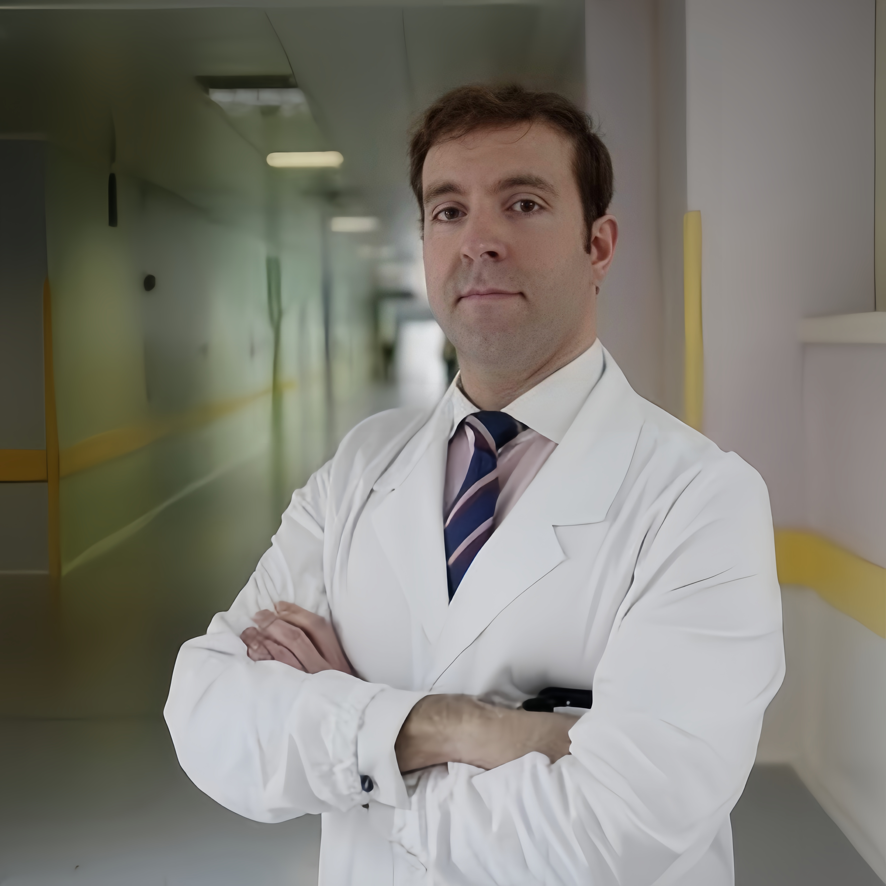
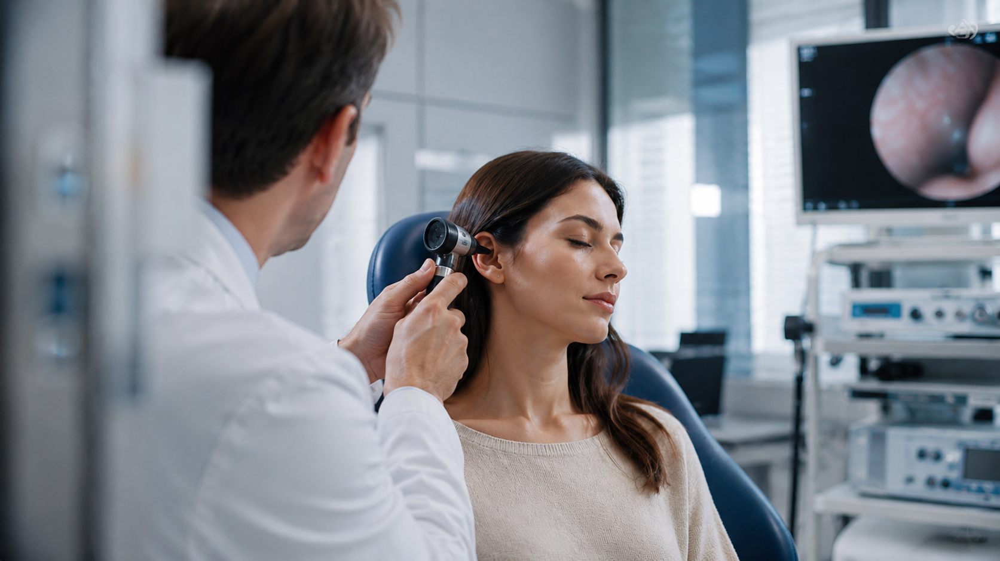

Dott. Remo Accorona
Vice Direttore Otorinolaringoiatria Niguarda
Alta specialità in chirurgia Cervico-Cefalica
Dirigente Medico presso l'Otorinolaringoiatria dell'Ospedale Niguarda di Milano. Professore a contratto dell'Università degli Studi di Milano. Specialista in chirurgia oncologica testa-collo, rinologia e chirurgia endoscopica della base cranica.

Chi sono
Una carriera dedicata
alla salute del paziente
Sono il Dott. Remo Accorona, medico chirurgo specializzato in Otorinolaringoiatria e Chirurgia Oncologica Testa-Collo, con alta specialità in chirurgia oncologica cervico-cefalica. Mi sono laureato con lode presso l'Università degli Studi di Brescia nel 2011 e ho conseguito la specializzazione nel 2017, sempre con lode, sotto la guida del Prof. Piero Nicolai. Ho completato la mia formazione con fellowship internazionali presso l'University Hospital KU Leuven (Belgio) e la Division of Head and Neck Surgery dell'Università di Hong Kong, un training in chirurgia robotica transorale presso il centro IRCAD di Strasburgo e una Head and Neck Surgical Oncology Observation Fellowship in chirurgia robotica presso l'AdventHealth Celebration di Orlando, Florida.
Dopo esperienze cliniche all'Humanitas di Rozzano, all'Ospedale di Bolzano e al Policlinico Maggiore di Milano, dal dicembre 2022 sono Dirigente Medico e dal maggio 2026 Vice Direttore della Divisione di Otorinolaringoiatria dell'Ospedale Grande Metropolitano Niguarda, uno dei principali centri ORL d'Italia. Svolgo attività ambulatoriale e chirurgica in libera professione intramuraria. Nel febbraio 2025 ho partecipato a una missione umanitaria in Sierra Leone per la chirurgia tiroidea e del collo.
Affianco all'attività clinica una intensa attività di ricerca e didattica: sono docente a contratto presso la Scuola di Specializzazione in ORL dell'Università degli Studi di Milano e Visiting Professor presso la Mahidol University di Bangkok, il Department of Surgical Oncology della Mansoura University in Egitto e Guest Professor alla National Autonomous University of Mexico, Città del Messico. Ho pubblicato oltre 80 fra articoli su riviste internazionali indicizzate e capitoli di libro, e sono membro dell'Editorial Board di Frontiers in Oncology e di Otorhinolaryngology (Minerva Medica).
Formazione & Carriera
Curriculum vitae
Un percorso di formazione internazionale e carriera clinico-scientifica nella chirurgia otorinolaringoiatrica e oncologica testa-collo.
Formazione Accademica
Carriera Clinica
Cosa tratto
Aree di specializzazione
Valutazione, diagnosi e trattamento in tutte le aree della specialità otorinolaringoiatrica, con approccio personalizzato per ogni fascia d'età.

Naso e Seni Paranasali
Diagnosi e cura delle principali problematiche nasali e sinusali, sia dal punto di vista funzionale che infiammatorio. L’obiettivo è ripristinare una corretta respirazione e migliorare la qualità di vita del paziente.
FAQ — Naso e Seni Paranasali
❓ La deviaizione del setto richiede sempre operazione?
No, solo se causa ostruzione grave, sinusiti ricorrenti o apnee notturne.
❓ Cosa portare se ho allergie?
I test allergologici già eseguiti e la lista dei farmaci attuali.
❓ La rinoscopia fa male?
No, è un esame rapido (5–10 min), del tutto indolore.

Oncologia Testa-Collo
Diagnosi precoce e trattamento chirurgico delle neoplasie del distretto testa-collo: faringe, laringe, cavo orale, tiroide e ghiandole salivari. Percorso integrato con il Gruppo Multidisciplinare del Niguarda, in collaborazione con oncologi, radioterapisti e chirurghi maxillo-facciali.
FAQ — Oncologia Testa-Collo
❓ Quali sintomi richiedono visita urgente?
Raucedine persistente, disfagia, nodulo al collo > 3 settimane o ulcere orali che non guariscono.
❓ Come avviene la prima valutazione?
Visita clinica con endoscopia flessibile, seguita da ecografia e biopsia se necessario.
❓ Si lavora in team multidisciplinare?
Sì, al Niguarda collaboro con oncologi, radioterapisti e chirurghi maxillofacciali.

Ghiandole Salivari e Tiroide
Valutazione diagnostica e chirurgia delle patologie nodulari e infiammatorie di tiroide, paratiroide e ghiandole salivari. Dalla diagnosi al follow-up, in collaborazione con il team endocrino-oncologico del Niguarda.
FAQ — Ghiandole Salivari e Tiroide
❓ Un nodulo al collo è sempre pericoloso?
No, la grande maggioranza è benigna. Ecografia e visita permettono una valutazione accurata.
❓ Devo fare l’ecografia prima della visita?
Utile ma non indispensabile. Se non la hai, posso richiederla io stesso.
❓ Dopo tiroidectomia la voce torna normale?
Nella stragrande maggioranza sì. Monitoriamo le corde vocali prima e dopo l’intervento.

Dotti Lacrimali e Orbite
Valutazione e gestione delle patologie infiammatorie, ostruttive e oncologiche dell’apparato lacrimale e della cavità orbitaria, incluse orbitopatia di Graves-Basedow ed esoftalmo. Approccio multidisciplinare mirato alla preservazione della funzionalità oculare.
FAQ — Dotti Lacrimali e Orbite
Quando si opera l’orbitopatia di Graves?
Nelle forme gravi con proptosi marcata, compressione del nervo ottico o diplopia invalidante refrattaria alla terapia medica. La valutazione è multidisciplinare con endocrinologo e oculista.
Cos’è la DCR endoscopica?
La dacriocistorinostomia endoscopica risolve la lacrimazione cronica da ostruzione del dotto lacrimonasale senza incisioni cutanee esterne, con guarigione rapida.
Serve il ricovero per la decompressione orbitaria?
Sì, è un intervento in anestesia generale con ricovero di 1–2 giorni. Il recupero funzionale completo avviene in 2–3 settimane.

Tonsille e Adenoidi
Diagnosi e trattamento medico e chirurgico dell’ipertrofia tonsillare e adenoidea nel bambino. Percorso di cura completo per tutte le principali problematiche ORL dell’età pediatrica, con attenzione alla crescita e allo sviluppo.
FAQ — Tonsille e Adenoidi
❓ Da che età si può fare la tonsillectomia?
Si valuta generalmente dopo i 3–4 anni, quando l’anestesia è più sicura.
❓ Il russamento nel bambino è normale?
Può segnalare adenoidi ingrossate o OSAS pediatrica; meglio valutarlo.
❓ L’otite si cura sempre con antibiotici?
Non sempre. Molte otiti medie acute guariscono spontaneamente; la terapia dipende dall’età e dalla gravità.

Gola, Laringe e Voce
Diagnosi e cura delle patologie di faringe, laringe e corde vocali, con approccio sia medico che chirurgico. Valutazione foniatrica integrata per i disturbi della voce, del linguaggio e della deglutizione.
FAQ — Gola, Laringe e Voce
❓ Come avviene la prima valutazione?
Visita otorinolaringoiatrica completa con laringoscopia (endoscopia con fibre ottiche flessibili o rigide) per una visione diretta della faringe e della laringe, e se necessario, test di fonazione.
❓ Di cosa si occupa la foniatria?
La foniatria è una branca della medicina che si occupa di prevenzione, diagnosi, cura e riabilitazione dei disturbi della comunicazione, inclusi voce, parola, linguaggio e deglutizione.

Orecchio e Udito
Diagnosi e trattamento delle patologie dell’orecchio e dell’udito: ipoacusia, acufeni, vertigini, otiti e disturbi dell’equilibrio. Valutazione audiometrica e strumentale per ogni fascia d’età.
FAQ — Orecchio e Udito
❓ Quando è necessaria una visita ORL per problemi all’orecchio?
È consigliabile una visita ORL in presenza di sintomi quali calo dell’udito (ipoacusia), sensazione di orecchio chiuso, ronzii o fischi (acufeni), vertigini, instabilità, dolore all’orecchio o fuoriuscita di secrezioni.
❓ Che cos’è l’ipoacusia e come si diagnostica?
L’ipoacusia è una riduzione parziale o totale dell’udito. Si diagnostica attraverso test audiometrici tonali e vocali che valutano la soglia uditiva e la capacità di comprensione del linguaggio. Se necessario, si effettuano ulteriori esami strumentali.
Patologie trattate
La visita otorinolaringoiatrica
Durante la visita specialistica viene effettuato un esame completo di orecchio, naso, gola e collo con strumentazione diagnostica di ultima generazione.

Come funziona
Cosa aspettarsi
dalla visita
La visita ORL comprende un'accurata raccolta della storia clinica, l'esame obiettivo di orecchie, naso e gola e, se necessario, l'utilizzo di endoscopi per una visualizzazione più approfondita.
Al termine della visita il paziente riceve una relazione scritta con diagnosi, indicazioni terapeutiche e eventuali approfondimenti strumentali consigliati.
Prenota la tua visitaChirurgia
Interventi chirurgici
Il Dott. Accorona esegue interventi chirurgici presso le sale operatorie dell'Ospedale Niguarda, con particolare esperienza in chirurgia oncologica testa-collo, endoscopica e mini-invasiva.
Cosa dicono i pazienti
Esperienze reali
Recensioni verificate di pazienti che hanno effettuato una visita in libera professione.
“Professionista eccezionale. Ha diagnosticato in pochi minuti un problema all’orecchio medio che avevo da mesi senza risoluzione. Relazione scritta dettagliata e piena disponibilità.”
“Ho portato mia figlia di 6 anni per le adenoidi. Il Dott. Accorona è stato pazientissimo con lei, spiegandole tutto in modo semplice. Ci ha messo subito a nostro agio.”
“Intervento al collo perfettamente riuscito. Il percorso pre e post-operatorio è stato seguito con grande attenzione. A distanza di 8 mesi la voce è tornata completamente normale.”
Hai effettuato una visita con il Dott. Accorona? Lascia la tua esperienza:
La tua esperienza è stata registrata e sarà visibile dopo moderazione.
Dove · Quando · Come prenotare
Ambulatorio e
prenotazioni
Il Dott. Accorona riceve in libera professione presso due strutture d’eccellenza a Milano. Scegli la sede che preferisci e prenota direttamente online.
Istituto di cura privato convenzionato con le principali assicurazioni sanitarie.
Allianz · AXA · Blue Assistance · Generali Welion · Mapfre
Copertura diretta e indiretta · verificare copertura al momento della prenotazione
Metro MM3 Gialla → Zara, poi bus · Bus 43, 40, 83 (fermata Niguarda) · Tram 4, 14 (Piazza Niguarda) · Parcheggio P1 Ospedale (ingresso via Zubiani)
Struttura completamente accessibile. Ascensori presenti. Parcheggi riservati all’ingresso.